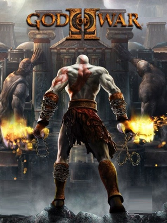

Protagonista: Kratos, o deus da guerra.
Plataforma: PlayStation 2
Data de lançamento: 2007
God of War II é um jogo de ação e aventura lançado em 2007 pela Santa Monica Studio e publicado pela Sony Interactive Entertainment.
O jogo continua a história de Kratos, um guerreiro espartano consumido pela vingança contra os deuses do Monte Olimpo.
Após derrotar Ares no primeiro jogo, Kratos assume o posto de novo Deus da Guerra.
Zeus decide traí-lo e envia Kratos ao submundo, iniciando uma jornada de vingança e mudança do destino.
O jogo utiliza vários elementos da mitologia grega, incluindo Zeus, Titãs, Prometeu e as Moiras.
God of War 2 ficou marcado pela narrativa épica e pela adaptação cinematográfica da mitologia grega.